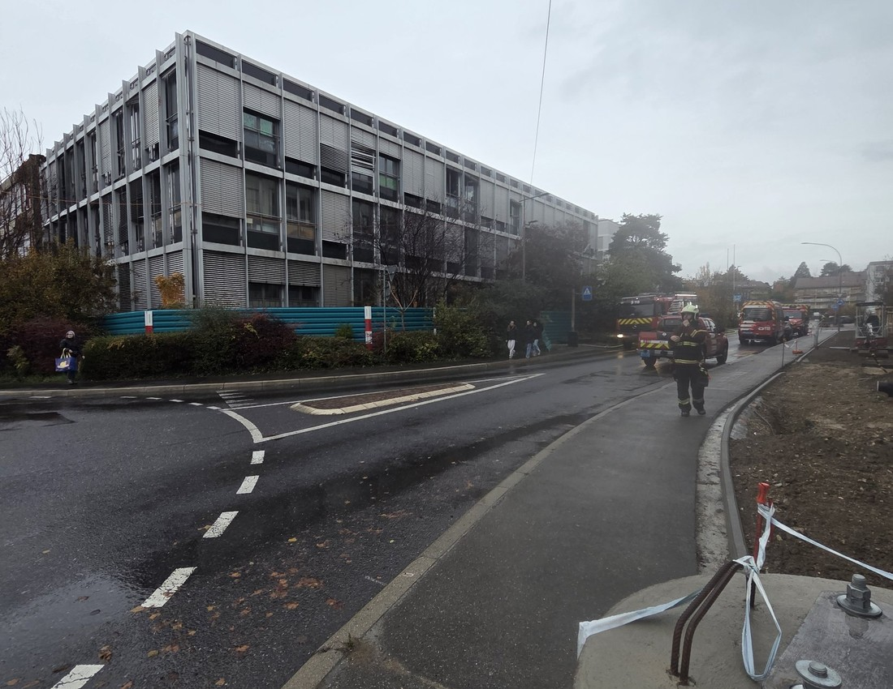
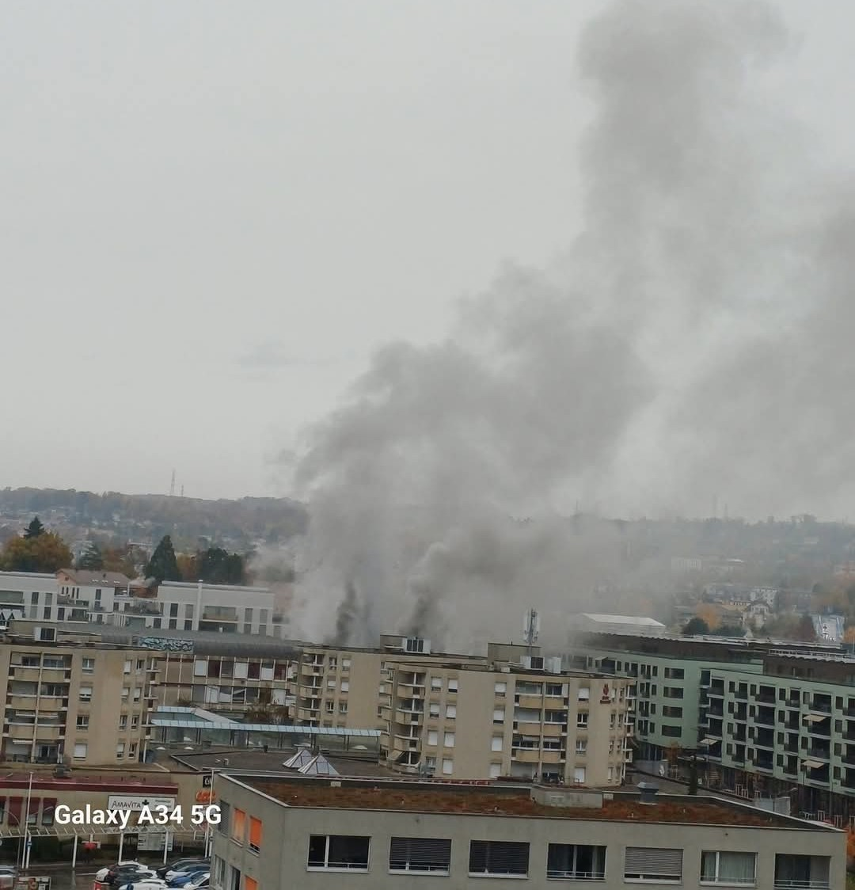

Ecublens : un incendie maîtrisé dans un immeuble près du centre commercial du Croset

Une quarantaine de personnes (pompiers, gendarmerie, police de proximité) sont mobilisées à Ecublens après un incendie dans un immeuble proche du centre commercial du Croset. Le feu est maîtrisé, une route est partiellement fermée.
Un incendie s'est déclaré jeudi 12 novembre, vers midi, dans un immeuble situé à proximité du centre commercial du Croset, à Ecublens, selon les informations et les images recueillies sur place par notre rédaction. Un important dispositif de secours y a été déployé : pas moins de 40 personnes sont mobilisées, d'après notre source.

Sur les lieux, nous avons constaté la présence de plusieurs véhicules des sapeurs-pompiers, d'un poste de commandement de l'ECA, l'Établissement cantonal d'assurance, et d'un véhicule de la gendarmerie vaudoise. Selon nos informations, les intervenants sont issus des pompiers du SDIS Chamberonne, de la gendarmerie et de la police de proximité. Une partie de la route a été fermée à la circulation. Des pompiers en tenue d'intervention étaient visibles autour d'un giratoire, sous une pluie fine.

Selon nos informations, le feu est aujourd'hui maîtrisé. Les pompiers restent toutefois sur place en cette fin d'après-midi pour des opérations de déblaiement et de contrôle, afin de s'assurer qu'aucun nouveau foyer ne se rallume.

Toujours selon nos informations, l'immeuble est utilisé par des squatteurs. Il s'agirait du troisième incendie dans ce bâtiment depuis le début de l'année. Une enquête est en cours pour déterminer la cause du sinistre, qui n'est pour l'heure pas connue.
À l'heure de la publication, nous n'avons trouvé aucune communication officielle de la police cantonale ou de l'ECA sur cette intervention. Le bilan humain et l'ampleur des dégâts n'ont pas été confirmés. Cet article sera complété dès que des informations officielles seront disponibles.